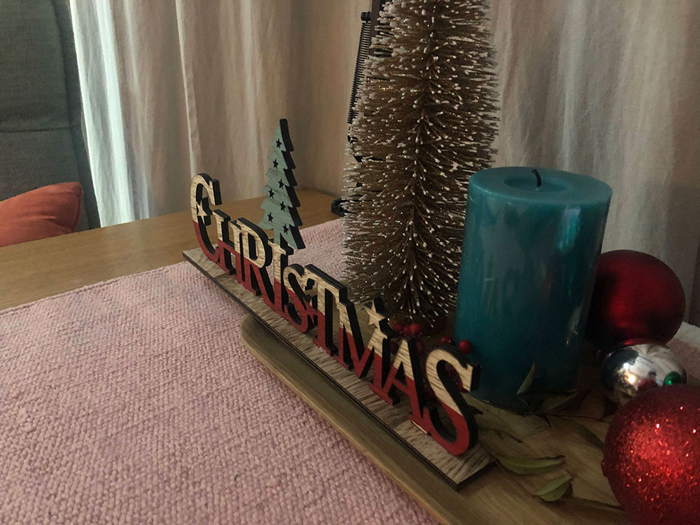
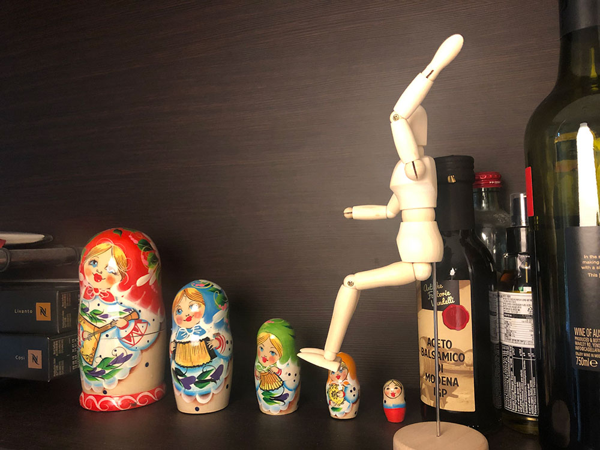
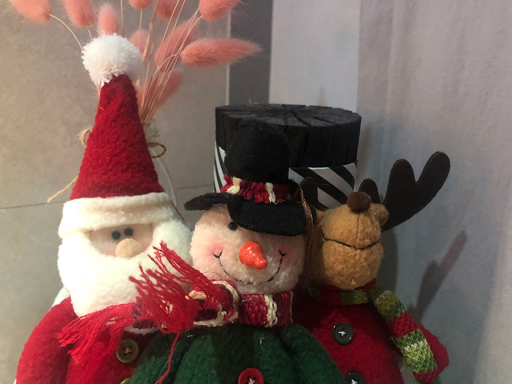

메뉴
서비스 소개
카페들
카페등록
카페찾기

제주코딩카페
개발자와 디자이너들을 위한 카페에요.
제주시 조천읍 함덕00길 000
064-000-0000
@jejucodingcafe

CAFE 마트료시카
러시아 인형 장식이 인상적인 러시아풍 카페에요.
제주시 조천읍 함덕00길 000
064-000-0000
@jejucodingcafe

크리스마스 카페
크리스마스에만 문을 여는 카페입니다.
제주시 조천읍 함덕00길 000
064-000-0000
@jejucodingcafe